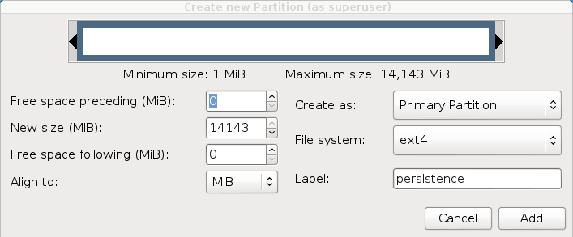
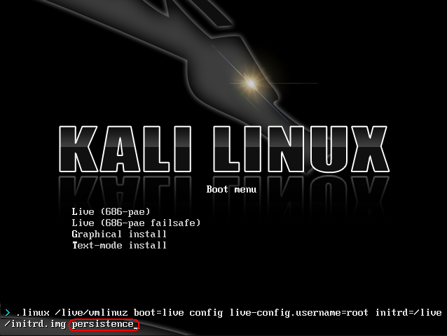

用Live U盘安装Kali Linux
从U盘启动然后安装Kali是我们最喜欢并且是运行Kali最快(容易)的方法.为此,我们首先要把Kali的ISO克隆到U盘.如果你经常使用Kali Linux U盘,请在克隆前阅读完整的文档.
准备USB镜象
- 下载Kali linux.
- 如果你用的是Windows,下载Win32 Disk Imager.
- *nix类系统不需要额外的软件.
- 一块U盘(至少 2GB 容量).
Kali Linux Live U盘安装过程
在用Windows的电脑上克隆Kali
- 插入U盘.运行Win32 Disk Imager.
- 选择Kali Linux ISO文件作为被克隆的文件,然后核实要克隆的U盘是否正确.
{kind=link}
- 克隆完成后,从Windows机器安全弹出U盘.现在你可以用U盘启动Kali Linux了.
在用Linux的电脑上克隆Kali
在Linux环境下制作可启动的Kali Linux U盘很容易.下载好Kali ISO文件后,你可以用dd把它克隆到U盘:
警告！虽然在U盘上克隆Kali过程很简单,但是如果你不懂你正在用dd做什么,很容易破坏引导分区.
- 插入U盘.
- 用dmesg确认你的U盘设备块名.
开始克隆Kali ISO文件到U盘(谨慎操作！):
dd if=kali.iso of=/dev/sdb bs=512k
就这样!你现在可以用U盘启动到Kali Live/Installer环境了.
为你的U盘添加Persistence功能
在某些情况下.为你的Kali Linux镜象添加persistence功能(在Live启动的时候可以保存和修改文件)非常有用.为了给你的Kali Linux U盘启动persistent功能,按照以下步骤.本例中,我们假设我们的设备块名是/dev/sdb.如果你想添加persistence功能,需要一块比上面提到的要求更大容量的U盘.
- 克隆Kali Linux ISO到U盘和上面讲解的一样,用dd在”用Linux的电脑上克隆Kali”.
在U盘创建并格式化额外的分区.本例中我们用gparted
gparted /dev/sdb现在你的分区方案应该和下图类似:
- 着手于格式化一个你要用于persistence功能的理想大小的新分区.在此例,我们使用所有剩余可用空间.确保新创建的分区卷名是persistence然后格式化成ext4文件系统. 
这步完成后,用以下命令挂载用于persistence功能的U盘分区:
mkdir /mnt/usb mount /dev/sdb2 /mnt/usb echo "/ union" >> /mnt/usb/persistence.conf umount /mnt/usb插入U盘到你要启动的电脑.务必设置BIOS从USB设备启动.当显示Kali Linux启动画面时,从菜单选择“Live boot”(不要按下回车),然后按下Tab键.这将允许你编辑启动参数,在每次你想挂载你的persistent 存储时添加“persistence”到boot参数行的最后. 
{kind=link}
{kind=link}
{kind=link}